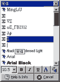
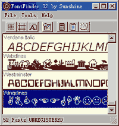

|
|
| 当前位置：电脑报电子版 > 1999 年 > 28 期 > 软件世界 > 字体预览软件集锦 |
| 《 字体预览软件集锦 》 |
| 像Word97、Excel97等软件存在一个共同弱点，即用户使用前很难看到字体的“庐山真面目”，尤其是国人不熟悉的英文字体。下面给大家介绍两类字体预览软件，它们能帮助你用好不熟悉的字体。 一、集成预览软件 集成预览软件的代表是Pcc Real Fonts（ftp://ftp.zdnet.com/pccomp/0898/realfnts.exe），它的最大特点.是与Office97紧密集成，安装后成为Word97、Excel97或PowerPoint97中的工具按钮，可在上述软件中预览、调用和设置字体格式。 Pcc Real Fonts安装结束，再运行Word97等软件，其“格式”工具栏中会多一个Pcc Real Fonts按钮（图1）。单击该按钮可打开字体浏览窗口（图2），使用垂直滚动条两端的按钮，可滚动窗口预览所有系统字体（中文字体只能显示名称不能预览）。若选中某种字体，其名称就会出现在提示条中。要想将文本设置为预览窗口中的某种字体，可选中Word97（或Excel97、PowerPoint97）中的文字，打开字体浏览窗口，单击你需要的字体。另外，Pcc Real Fonts窗口下端还提供了一个工具条，其中有字号、粗体、斜体、下划线、颜色五个按钮。为了让用户对系统字体有一个全面的了解，Pcc Real Fonts还提供了打印字体列表的功能。你只要在Word97中打开图2窗口，单击“Click here Print a Sample List of all ailable fonts”按钮，即可用你选定的字号打印一份字体列表。 二、普通预览软件 普通预览软件的代表是FontFinder4.5（http://www.sunv.com/newhua/down/fontfind.exe），此类软件安装后成为Win95/98“开始/程序”菜单中的一个应用程序。它们可以预览、打印系统中的全部英文字体，其工作方式类似于ACDSee，但不能在Word97等软件中预览、调用和设置字体格式。 运行FontFinder4.5后，系统安装的所有英文字体样式会自动显示在窗口（图3）。使用窗口右侧的按钮滚动窗口，即可看到全部字体。字符集显示方式均支持右键快捷方式，你可以选中字符集的某个字符，在右键快捷菜单中执行显示ASCII值、COPY等操作。若单击“FontMetrics”按钮，可在窗口中显示该字体的细节。 类似FontFinder45这样的独立浏览工具比较多，如FontLister3.4.8（http://www8.ilversand.net/nethome/newhua/file/fl.exe），它可以预览CD中尚未安装的字体，同时提供了将输入的文字直接转存为BMP文件的功能。FontPrintMagic1.7（http://www.sunv.com/newhua/down/fpmagic.exe）也是一个多功能字体文件管理软件，可以让字体以Arranged格式显示。同时具有打印、过滤、安装、删除字体等功能，还可以连接到网络上的字体程序库，用以寻找更新的字体。 需要说明的是：上述字体预览软件均为单字节软件，浏览英文字体的效果很好。浏览中文字体时多数不能正常显示，但能给出字体名称等信息。 |
| 下载本期推荐软件 | 页 首 |
| 《电脑报》版权所有，电脑报网站编辑部设计制作发布 |